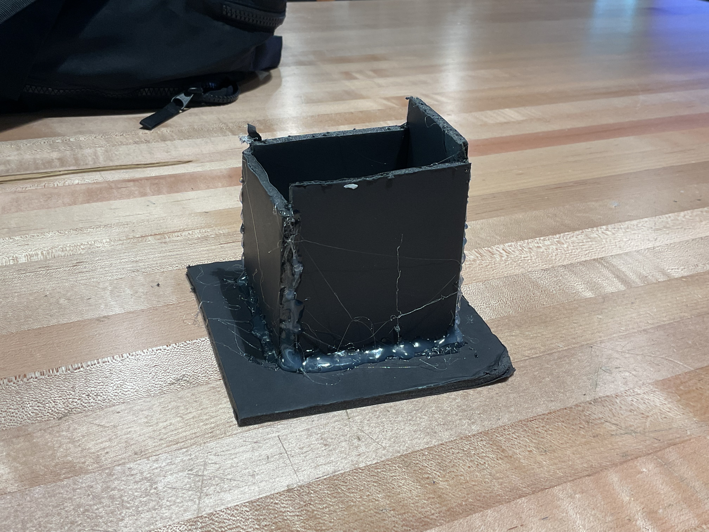
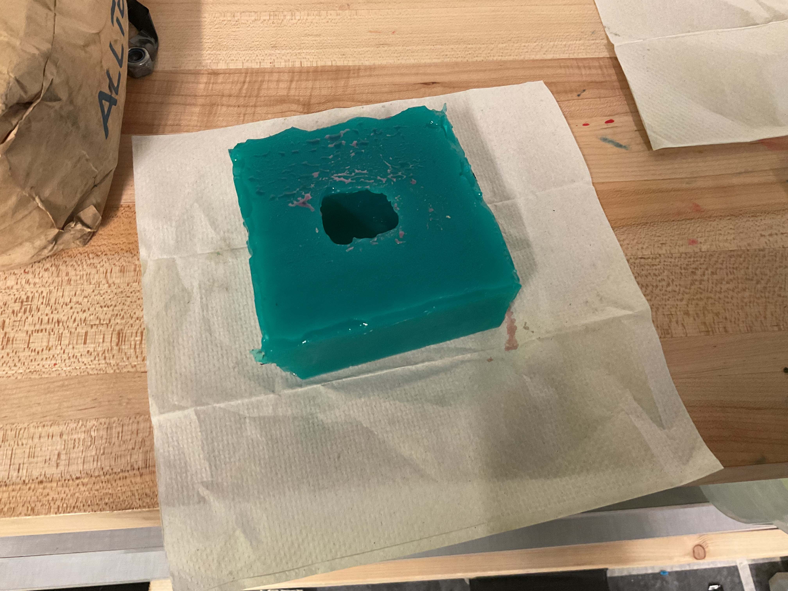
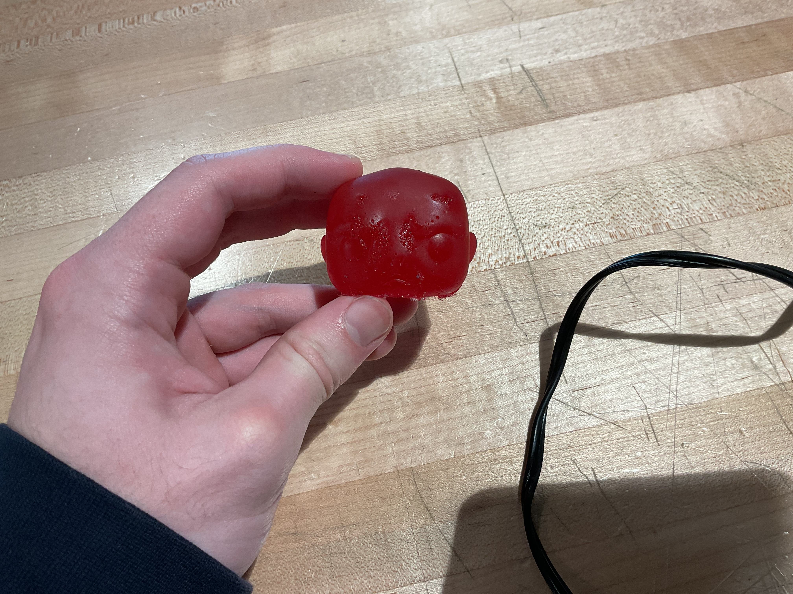
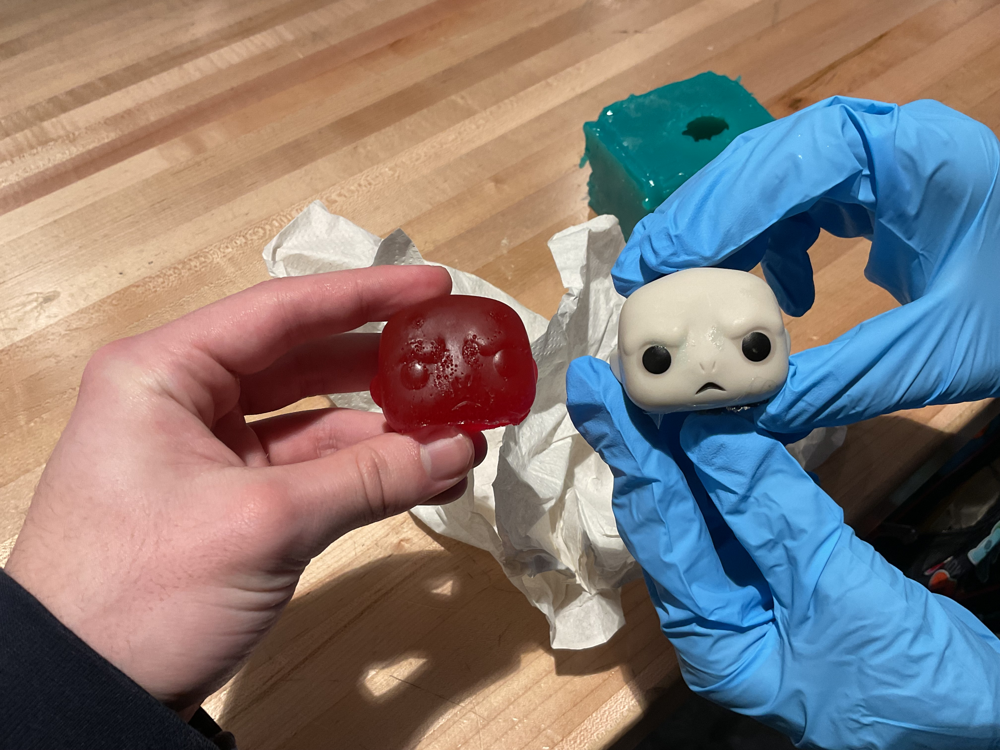

Molding and Casting-Open Back Mold
For this mini project I had to prep an object cast silicone into a box in order to make a silicone mold of it. Pictured above is the box I used in order to pour silicone into my object. As you can see an insane amount of hot glue was used in order to ensure no leakage would happen once I poured. Also the angle of this picture is a bit weird so the box looks a little smaller than it actually is.
Here is the mold that was created after I waited a couple days and after I took out my object. This process was a little harder than anticipated as I had to fix a couple of leaks that sprang up once I poured into the box. However, the mold turned out pretty good and now I need to cast into this mold to come out with the product.
 Here is my final product of my open back mold. The object was a head of an old voldermort figure from a Harry Potter board game, because it broke off of the body, and I decided it would be a fun object to mold. I used a hot pink dye to give it a more redish look and I really liked the color that came out of the mold. The face has a couple of dots around it but other than that it was a really good product and it was super fun to make.